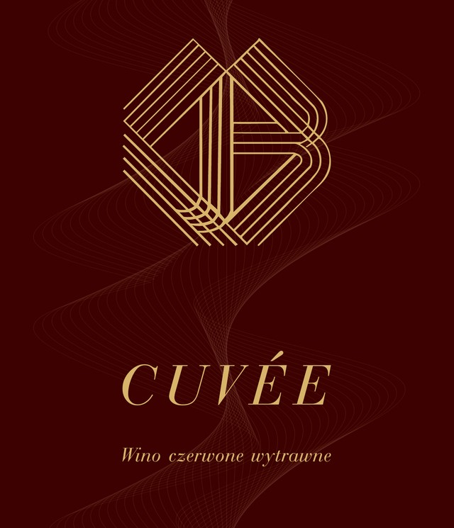
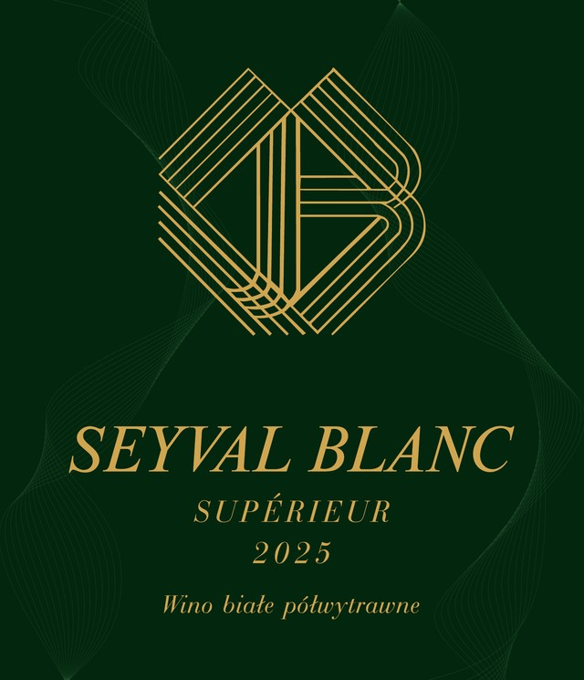
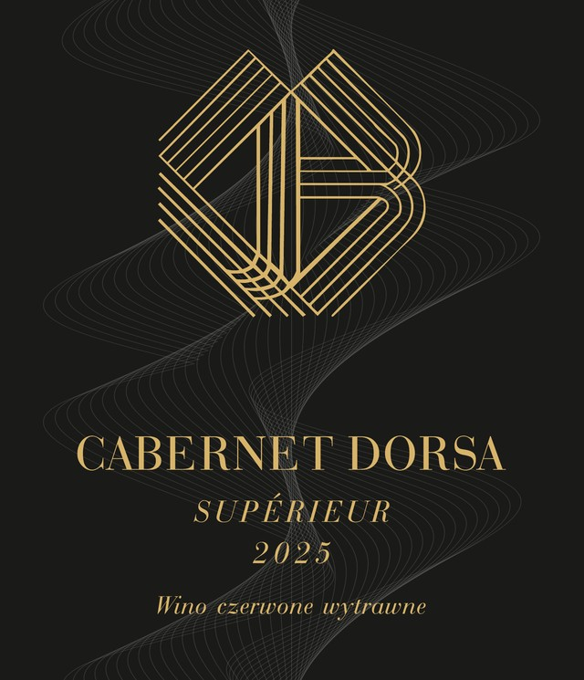

Seyval Blanc
Świeże, aromatyczne wino o wyraźnej kwasowości — idealne dla miłośników rześkich, białych win.
ŚwieżeIntensywne
Nad brzegiem Jeziora Ruda dojrzewają winorośle klasycznych szczepów Vitis vinifera. Ograniczona produkcja, rzemieślnicza uwaga do detalu — od uprawy po butelkę.
Nasza winnica zaczynała skromnie — od odmian hybrydowych, typowych dla polskiego klimatu. Z czasem jednak postawiliśmy na ambitny cel: skupić się na klasycznych szczepach Vitis vinifera, aby tworzyć wina, które dorównują najlepszym europejskim tradycjom.
Winnica Ruda to miejsce butikowe, w którym każda parcela, każdy krzew i każda butelka są efektem świadomej, rzemieślniczej pracy. Stawiamy na jakość, ograniczoną produkcję i dbałość o detale — od uprawy winorośli po finalne dojrzewanie wina.
Dziś z dumą zadajemy kłam przekonaniu, że w Polsce nie da się zrobić dobrego czerwonego wina. Każda butelka z Winnicy Ruda jest dowodem na to, że pasja, wiedza i cierpliwość potrafią przełamać bariery.
Jakość ponad ilość — w zgodzie z naturą, z myślą o dalszym, świadomym rozwoju.
Tradycja spotyka się tu z nowoczesnością, a każdy kieliszek jest świadectwem odwagi w tworzeniu wina na najwyższym poziomie — w sercu Polski
Winnica Ruda
Świeże, aromatyczne wino o wyraźnej kwasowości — idealne dla miłośników rześkich, białych win.
Elegancja i głębia smaku w czerwonym wydaniu — subtelna struktura, wyrazisty charakter.
Intensywna barwa i owocowa pełnia — jedna z najbardziej wyrazistych odmian w naszej winnicy.
Mocne, wyraziste odmiany stworzone dla koneserów szukających charakteru i mocnej struktury.
Subtelna finezja z południowym temperamentem — zaskakująca lekkość w połączeniu z charakterem.
Wyjątkowa odmiana, której czerwony miąższ nadaje winu niepowtarzalną głębię i intensywność.
Trzy wina, trzy charaktery — każde butelkowane w ograniczonej, rzemieślniczej produkcji.



Okolica nad Jeziorem Ruda — pofałdowana, pełna wzniesień i jezior polodowcowych — bywa nazywana „Szwajcarią Rypińską". To właśnie w tym krajobrazie rozciąga się nasza winnica, którą można zwiedzić z bliska.
Butelki z naszej ograniczonej produkcji można kupić bezpośrednio w winnicy — bez pośredników, prosto od winiarza.
Spacer między rzędami winorośli nad brzegiem jeziora — z opowieścią o uprawie, parcelach i rytmie kolejnych zbiorów.
Właściciel winnicy osobiście oprowadza gości i opowiada — nie tylko o Winnicy Ruda, ale i o winie w ogóle, z pasją konesera.
Zadzwoń, żeby ustalić termin — chętnie oprowadzimy Was po winnicy i opowiemy o winie przy lampce z naszej produkcji.